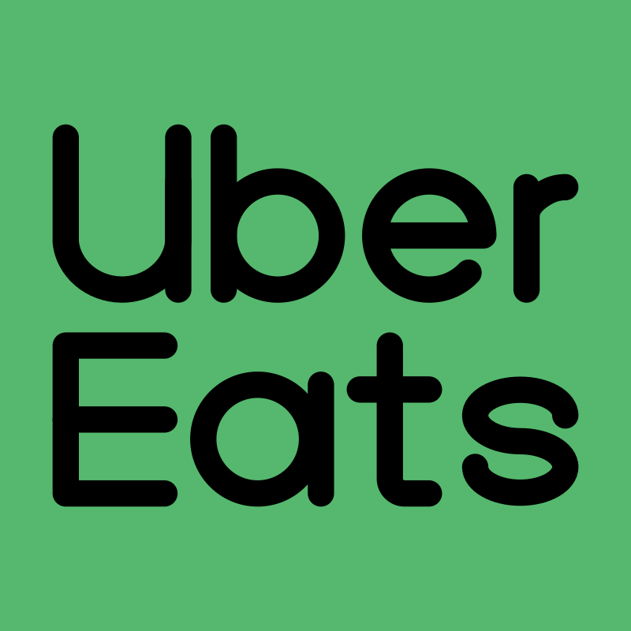
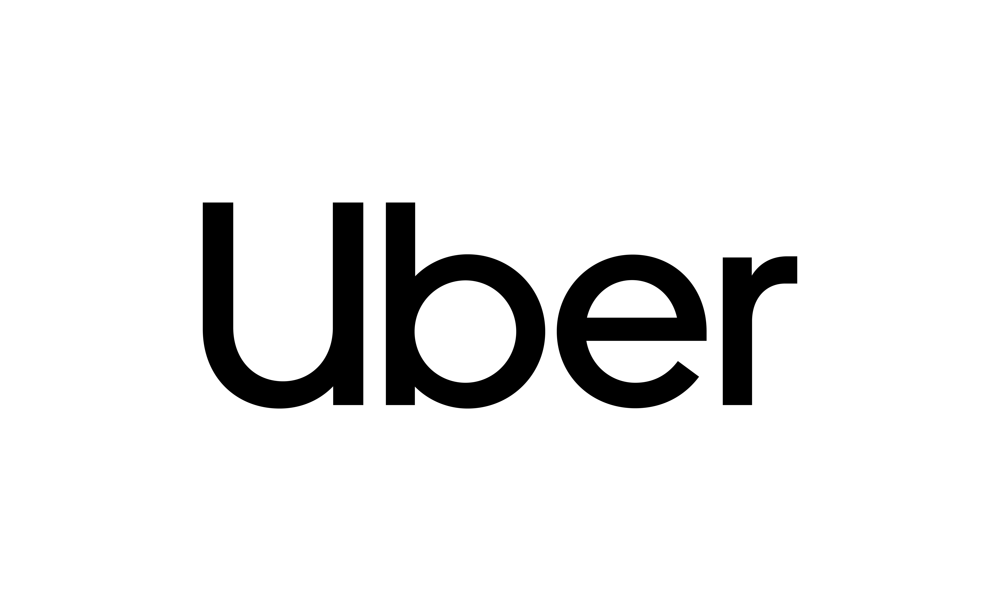
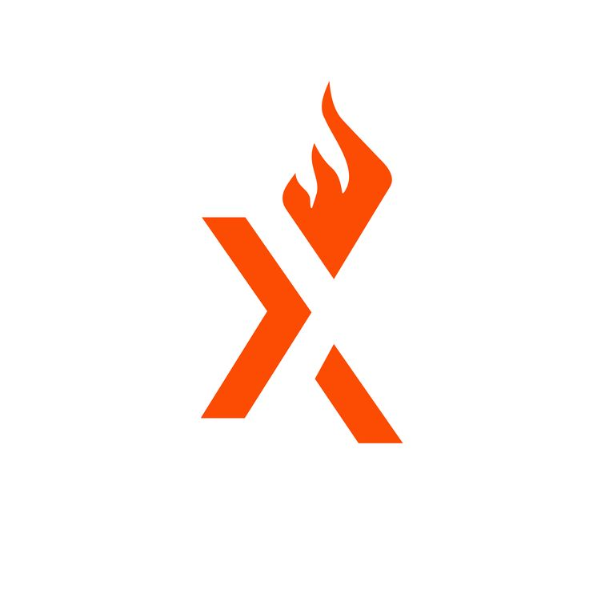
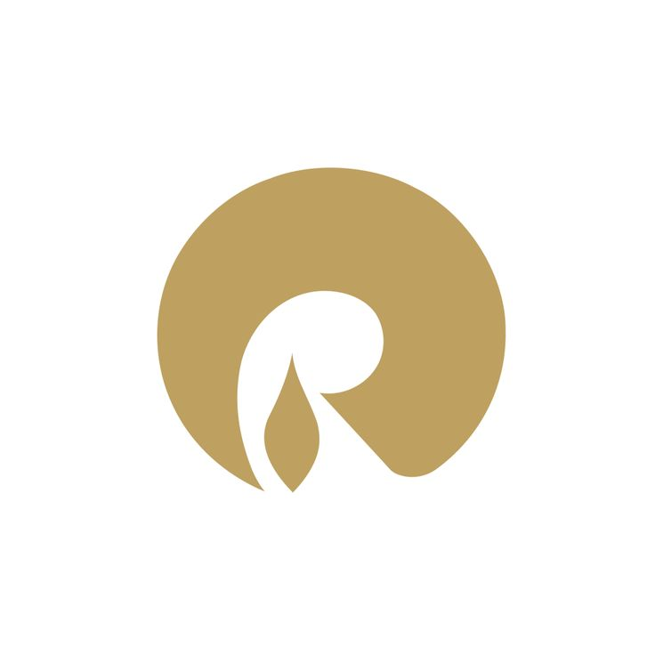

Hello I'm Yash Gadle.
Frontend Developer
Based In India.
I’m a frontend engineer who owns projects end-to-end, building and improving user-facing web and
embedded experiences in close collaboration with product, design, and engineering.
My strengths
include full-stack debugging, strong product and business understanding, and a collaborative
approach that drives team effectiveness and continuous improvement.

My Skills
My Experience

Uber Eats
New YorkMy first experience at Scale was on UberEats, where I collaborated across multiple teams and handled high-pressure incidents, even at 2AM. I contributed to both UberEats.com and the webview experience, improving performance and user experience—especially on the Home Feed. I worked across key areas including storefront, tipping, and checkout. In the webview, I enhanced order tracking by adding live chat translations, interactive maps, and courier-to-eater pathing lines.

Uber
BengaluruI joined Uber as part of the Developer Platform team, where I contributed to the Mobile Release team. Our team was responsible for building and publishing all Uber apps --- Uber, driver, UberEats, Postmates (iOS + Android) and many more. Our system was fully automated and I was responsible for owning the frontend tooling that allowed mobile devs to track build progress, hot-fixing bugs on existing releases, render changelogs, trigger builds manually.

Axelerant
New DelhiMy time at Axelerant, though brief, was filled with challenging frontend projects that pushed me beyond my comfort zone. I built a configuration-driven persona engine that allowed clients to dynamically tailor website content based on user segments. I also developed a chatbot using the Microsoft Bot Framework, integrating Microsoft QnA Maker and LUIS to handle FAQs and enable natural language understanding. Additionally, I worked on a frontend-intensive internal tool called “RetroBoard,” where teams could create boards, invite members, and collaborate using draggable cards—similar to Jira retrospectives.

Reliance
Navi MumbaiI began my career as a Graduate Engineer Trainee at Reliance, where I built a strong foundation in modern web technologies. Guided by a supportive manager, I worked with open-source tools like Node.js and React while integrating solutions with SAP-based enterprise systems. I gained hands-on experience with the MERN stack, developing APIs and deploying full-stack applications. I also learned key infrastructure concepts such as load balancers and reverse proxies. This role established the technical fundamentals I continue to rely on today.
About Me
I’m a frontend engineer with 8+ years of experience building and scaling user-facing experiences
across web and embedded platforms. I’ve worked across high-impact teams at Uber and Uber Eats,
contributing to merchant onboarding, messaging systems, developer platforms, and large-scale
third-party integrations.
My work spans end-to-end ownership — from shaping PRDs with product teams to drafting technical
designs, implementing performant UI systems, and ensuring smooth, analytics-driven launches. I enjoy
translating complex business requirements into intuitive, high-quality user experiences that drive
engagement and conversion.
I’ve led initiatives across UberEats.com’s core web platform, embedded Eats experiences (Instacart,
Apple Maps, PayPay, Rider App), and high-visibility messaging surfaces. My focus areas include
performance, scalability, personalization, cross-surface integrations, and developer experience
improvements.
Technically, I’m strongest in JavaScript, React, Node.js, HTML/CSS, and modern UI systems, with
experience across server-side rendering, embedded webviews, and analytics-driven product iteration.